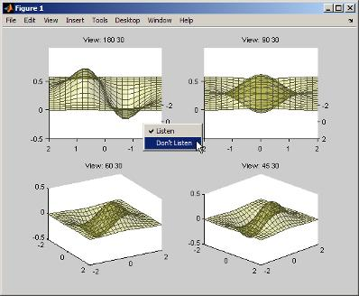
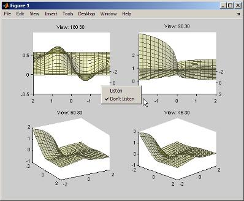
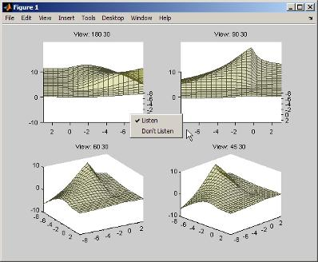

Techniques for Using Events and Listeners
Example Overview
This example defines two classes:
fcneval— The function evaluator class contains a MATLAB® expression and evaluates this expression over a specified rangefcnview— The function viewer class contains afcnevalobject and displays surface graphs of the evaluated expression using the data contained infcneval.
This class defines two events:
A class-defined event that occurs when a new value is specified for the MATLAB function
A property event that occurs when the property containing the limits is changed
The following diagram shows the relationship between the two objects. The fcnview object contains a fcneval object and creates graphs from the data it contains. fcnview creates listeners to change the graphs if any of the data in the fcneval object change.

Techniques Demonstrated in This Example
Naming an event in the class definition
Triggering an event by calling
notifyEnabling a property event via the
SetObservableattributeCreating listeners for class-defined events and property
PostSeteventsDefining listener callback functions that accept additional arguments
Enabling and disabling listeners
Summary of fcneval Class
The fcneval class evaluates a MATLAB expression over a specified range of two variables. The fcneval is the source of the data that objects of the fcnview class graph as a surface. fcneval is the source of the events used in this example. For a listing of the class definition, see @fcneval/fcneval.m Class Code
| Property | Value | Purpose |
|---|---|---|
FofXY | function handle | MATLAB expression (function of two variables). |
Lm | two-element vector | Limits over which function is evaluated in both variables. SetObservable attribute set to true to enable property event listeners. |
Data | structure with x, y, and z matrices | Data resulting from evaluating the function. Used for surface graph. Dependent attribute set to true, which means the get.Data method is called to determine property value when queried and no data is stored. |
| Event | When Triggered |
|---|---|
UpdateGraph | FofXY property set function (set.FofXY) calls the notify method when a new value is specified for the MATLAB expression on an object of this class. |
| Method | Purpose |
|---|---|
fcneval | Class constructor. Inputs are function handle and two-element vector specifying the limits over which to evaluate the function. |
set.FofXY | FofXY property set function. Called whenever property value is set, including during object construction. |
set.Lm | Lm property set function. Used to test for valid limits. |
get.Data | Data property get function. This method calculates the values for the Data property whenever that data is queried (by class members or externally). |
grid | A static method (Static attribute set to true) used in the calculation of the data. |
Summary of fcnview Class
Objects of the fcnview class contain fcneval objects as the source of data for the four surface graphs created in a function view. fcnview creates the listeners and callback functions that respond to changes in the data contained in fcneval objects. For a listing of the class definition, see @fcnview/fcnview.m Class Code
| Property | Value | Purpose |
|---|---|---|
FcnObject | fcneval object | This object contains the data that is used to create the function graphs. |
HAxes | axes handle | Each instance of a fcnview object stores the handle of the axes containing its subplot. |
HLUpdateGraph | event.listener object for UpdateGraph event | Setting the event.listener object's Enabled property to true enables the listener; false disables listener. |
HLLm | event.listener object for Lm property event | Setting the event.listener object's Enabled property to true enables the listener, false disables listener. |
HEnableCm | uimenu handle | Item on context menu used to enable listeners (used to handle checked behavior) |
HDisableCm | uimenu handle | Item on context menu used to disable listeners (used to manage checked behavior) |
HSurface | surface handle | Used by event callbacks to update surface data. |
| Method | Purpose |
|---|---|
fcnview | Class constructor. Input is fcneval object. |
createLisn | Calls addlistener to create listeners for UpdateGraph and Lm property PostSet listeners. |
lims | Sets axes limits to current value of fcneval object's Lm property. Used by event handlers. |
updateSurfaceData | Updates the surface data without creating a new object. Used by event handlers. |
listenUpdateGraph | Callback for UpdateGraph event. |
listenLm | Callback for Lm property PostSet event |
delete | Delete method for fcnview class. |
createViews | Static method that creates an instance of the fcnview class for each subplot, defines the context menus that enable/disable listeners, and creates the subplots |
Methods Inherited from Handle Class
Both the fcneval and fcnview classes inherit methods from the handle class. The following table lists only those inherited methods used in this example.
Handle Class Methods provides a complete list of methods that are inherited when you subclass the handle class.
| Methods Inherited from Handle Class | Purpose |
|---|---|
addlistener | Register a listener for a specific event and attach listener to event-defining object. |
notify | Trigger an event and notify all registered listeners. |
Using the fcneval and fcnview Classes
This section explains how to use the classes.
Create an instance of the
fcnevalclass to contain the MATLAB expression of a function of two variables and the range over which you want to evaluate this functionUse the
fcnviewclass static functioncreateViewsto visualize the functionChange the MATLAB expression or the limits contained by the
fcnevalobject and all thefcnviewobjects respond to the events generated.
You create a fcneval object by calling its constructor with two arguments—an anonymous function and a two-element, monotonically increasing vector. For example:
feobject = fcneval(@(x,y) x.*exp(-x.^2-y.^2),[-2 2]);
Use the createViews static method to create the graphs of the function. Use the class name to call a static function:
fcnview.createViews(feobject);
The createView method generates four views of the function contained in the fcneval object.

Each subplot defines a context menu that can enable and disable the listeners associated with that graph. For example, if you disable the listeners on subplot 221 (upper left) and change the MATLAB expression contained by the fcneval object, only the remaining three subplots update when the UpdateGraph event is triggered:
feobject.FofXY = @(x,y) x.*exp(-x.^.5-y.^.5);

Similarly, if you change the limits by assigning a value to the
feobject.Lm property, the feobject triggers a
PostSet property event and the listener callbacks update the
graph.
feobject.Lm = [-8 3];

In this figure, the listeners are reenabled via the context menu for subplot 221. Because the listener callback for the property PostSet event also updates the surface data, all views are now synchronized
Implement UpdateGraph Event and Listener
The UpdateGraph event occurs when the MATLAB representation of the mathematical function contained in the fcneval object is changed. The fcnview objects that contain the surface graphs are listening for this event, so they can update the graphs to represent the new function.
Define and Trigger UpdateGraph Event
The UpdateGraph event is a class-defined event. The fcneval class names the event and calls notify when the event occurs.

The fcnview class defines a listener for this event. When fcneval triggers the event, the fcnview listener executes a callback function that performs the follow actions:
Determines if the handle of the surface object stored by the
fcnviewobject is still valid (that is, does the object still exist)Updates the surface
XData,YData, andZDataby querying thefcnevalobject'sDataproperty.
The fcneval class defines an event name in an event block:
events
UpdateGraph
endDetermine When to Trigger Event
The fcneval class defines a property set method for the FofXY property. FofXY is the property that stores the MATLAB expression for the mathematical function. This expression must be a valid MATLAB expression for a function of two variables.
The set.FofXY method:
Determines the suitability of the expression
If the expression is suitable:
Assigns the expression to the
FofXYpropertyTriggers the
UpdateGraphevent
If fcneval.isSuitable does not return an MException object, the set.FofXY method assigns the value to the property and triggers the UpdateGraph event.
function set.FofXY(obj,func)
% Determine if function is suitable to create a surface
me = fcneval.isSuitable(func);
if ~isempty(me)
throw(me)
end
% Assign property value
obj.FofXY = func;
% Trigger UpdateGraph event
notify(obj,'UpdateGraph');
endDetermine Suitability of Expression
The set.FofXY method calls a static method (fcneval.isSuitable) to determine the suitability of the specified expression. fcneval.isSuitable returns an MException object if it determines that the expression is unsuitable. fcneval.isSuitable calls the MException constructor directly to create more useful error messages for the user.
set.FofXY issues the exception using the throw method. Issuing the exception terminates execution of set.FofXY and prevents the method from making an assignment to the property or triggering the UpdateGraph event.
Here is the fcneval.isSuitable method:
function isOk = isSuitable(funcH)
v = [1 1;1 1];
% Can the expression except 2 numeric inputs
try
funcH(v,v);
catch
me = MException('DocExample:fcneval',...
['The function ',func2str(funcH),' Is not a suitable F(x,y)']);
isOk = me;
return
end
% Does the expression return non-scalar data
if isscalar(funcH(v,v));
me = MException('DocExample:fcneval',...
['The function ',func2str(funcH),'' Returns a scalar when evaluated']);
isOk = me;
return
end
isOk = [];
endThe fcneval.isSuitable method could provide additional test to ensure that the expression assigned to the FofXY property meets the criteria required by the class design.
Other Approaches
The class could have implemented a property set event for the FofXY property and would, therefore, not need to call notify (see Listen for Changes to Property Values). Defining a class event provides more flexibility in this case because you can better control event triggering.
For example, suppose that you wanted to update the graph only if the new data is different. If the new expression produced the same data within some tolerance, the set.FofXY method could not trigger the event and avoid updating the graph. However, the method could still set the property to the new value.
Listener and Callback for UpdateGraph Event
The fcnview class creates a listener for the UpdateGraph event using the addlistener method:
obj.HLUpdateGraph = addlistener(obj.FcnObject,'UpdateGraph',...
@(src,evnt)listenUpdateGraph(obj,src,evnt)); % Add obj to argument listThe fcnview object stores a handle to the event.listener object in its HLUpdateGraph property, which is used to enable/disable the listener by a context menu (see Enable and Disable Listeners).
The fcnview object (obj) is added to the two default arguments (src, evnt) passed to the listener callback. Keep in mind, the source of the event (src) is the fcneval object, but the fcnview object contains the handle of the surface object that the callback updates.
The listenUpdateGraph function is defined as follows:
function listenUpdateGraph(obj,src,evnt)
if ishandle(obj.HSurface) % If surface exists
obj.updateSurfaceData % Update surface data
end
endThe updateSurfaceData function is a class method that updates the surface data when a different mathematical function is assigned to the fcneval object. Updating a graphics object data is more efficient than creating a new object using the new data:
function updateSurfaceData(obj)
% Get data from fcneval object and set surface data
set(obj.HSurface,...
'XData',obj.FcnObject.Data.X,...
'YData',obj.FcnObject.Data.Y,...
'ZData',obj.FcnObject.Data.Matrix);
endThe PostSet Event Listener
All properties support the predefined PostSet event (See Property-Set and Query Events for more information on property events). This example uses the PostSet event for the fcneval
Lm property. This property contains a two-element vector specifying the range over which the mathematical function is evaluated. Just after this property is changed (by a statement like obj.Lm = [-3 5];), the fcnview objects listening for this event update the graph to reflect the new data.

Sequence During the Lm Property Assignment
The fcneval class defines a set function for the Lm property. When a value is assigned to this property during object construction or property reassignment, the following sequence occurs:
An attempt is made to assign argument value to
Lmproperty.The
set.Lmmethod executes to check whether the value is in appropriate range — if yes, it makes assignment, if no, it generates an error.If the value of
Lmis set successfully, MATLAB triggers aPostSetevent.All listeners execute their callbacks, but the order is nondeterministic.
The PostSet event does not occur until an actual assignment of the property occurs. The property set function provides an opportunity to deal with potential assignment errors before the PostSet event occurs.
Enable PostSet Property Event
To create a listener for the PostSet event, you must set the property's SetObservable attribute to true:
properties (SetObservable = true) Lm = [-2*pi 2*pi]; % specifies default value end end
MATLAB automatically triggers the event so it is not necessary to call notify.
Property Attributes provides a list of all property attributes.
Listener and Callback for PostSet Event
The fcnview class creates a listener for the PostSet event using the addlistener method:
obj.HLLm = addlistener(obj.FcnObject,'Lm','PostSet',...
@(src,evnt)listenLm(obj,src,evnt)); % Add obj to argument listThe fcnview object stores a handle to the event.listener object in its HLLm property, which is used to enable/disable the listener by a context menu (see Enable and Disable Listeners).
The fcnview object (obj) is added to the two default arguments (src, evnt) passed to the listener callback. Keep in mind, the source of the event (src) is the fcneval object, but the fcnview object contains the handle of the surface object that the callback updates.
The callback sets the axes limits and updates the surface data because changing the limits causes the mathematical function to be evaluated over a different range:
function listenLm(obj,src,evnt)
if ishandle(obj.HAxes) % If there is an axes
lims(obj); % Update its limits
if ishandle(obj.HSurface) % If there is a surface
obj.updateSurfaceData % Update its data
end
end
end Enable and Disable Listeners
Each fcnview object stores the handle of the listener objects it creates so that the listeners can be enabled or disabled via a context menu after the graphs are created. All listeners are instances of the event.listener class, which defines a property called Enabled. By default, this property has a value of true, which enables the listener. If you set this property to false, the listener still exists, but is disabled. This example creates a context menu active on the axes of each graph that provides a way to change the value of the Enabled property.
Context Menu Callback
There are two callbacks used by the context menu corresponding to the two items on the menu:
Listen — Sets the
Enabledproperty for both theUpdateGraphandPostSetlisteners totrueand adds a check mark next to the Listen menu item.Don't Listen — Sets the
Enabledproperty for both theUpdateGraphandPostSetlisteners tofalseand adds a check mark next to the Don't Listen menu item.
Both callbacks include the fcnview object as an argument (in addition to the required source and event data arguments) to provide access to the handle of the listener objects.
The enableLisn function is called when the user selects Listen from the context menu.
function enableLisn(obj,src,evnt) obj.HLUpdateGraph.Enabled = true; % Enable listener obj.HLLm.Enabled = true; % Enable listener set(obj.HEnableCm,'Checked','on') % Check Listen set(obj.HDisableCm,'Checked','off') % Uncheck Don't Listen end
The disableLisn function is called when the user selects Don't Listen from the context menu.
function disableLisn(obj,src,evnt) obj.HLUpdateGraph.Enabled = false; % Disable listener obj.HLLm.Enabled = false; % Disable listener set(obj.HEnableCm,'Checked','off') % Uncheck Listen set(obj.HDisableCm,'Checked','on') % Check Don't Listen end
@fcneval/fcneval.m Class Code
classdef fcneval < handle properties FofXY end properties (SetObservable = true) Lm = [-2*pi 2*pi] end % properties SetObservable = true properties (Dependent = true) Data end events UpdateGraph end methods function obj = fcneval(fcn_handle,limits) if nargin > 0 obj.FofXY = fcn_handle; obj.Lm = limits; end end function set.FofXY(obj,func) me = fcneval.isSuitable(func); if ~isempty(me) throw(me) end obj.FofXY = func; notify(obj,'UpdateGraph'); end function set.Lm(obj,lim) if ~(lim(1) < lim(2)) error('Limits must be monotonically increasing') else obj.Lm = lim; end end function data = get.Data(obj) [x,y] = fcneval.grid(obj.Lm); matrix = obj.FofXY(x,y); data.X = x; data.Y = y; data.Matrix = real(matrix); end end % methods methods (Static = true) function [x,y] = grid(lim) inc = (lim(2)-lim(1))/20; [x,y] = meshgrid(lim(1):inc:lim(2)); end % grid function isOk = isSuitable(funcH) v = [1 1;1 1]; try funcH(v,v); catch %#ok<CTCH> me = MException('DocExample:fcneval',... ['The function ',func2str(funcH),' Is not a suitable F(x,y)']); isOk = me; return end if isscalar(funcH(v,v)); me = MException('DocExample:fcneval',... ['The function ',func2str(funcH),' Returns a scalar when evaluated']); isOk = me; return end isOk = []; end end end
@fcnview/fcnview.m Class Code
classdef fcnview < handle properties FcnObject % fcneval object HAxes % subplot axes handle HLUpdateGraph % UpdateGraph listener handle HLLm % Lm property PostSet listener handle HEnableCm % "Listen" context menu handle HDisableCm % "Don't Listen" context menu handle HSurface % Surface object handle end methods function obj = fcnview(fcnobj) if nargin > 0 obj.FcnObject = fcnobj; obj.createLisn; end end function createLisn(obj) obj.HLUpdateGraph = addlistener(obj.FcnObject,'UpdateGraph',... @(src,evnt)listenUpdateGraph(obj,src,evnt)); obj.HLLm = addlistener(obj.FcnObject,'Lm','PostSet',... @(src,evnt)listenLm(obj,src,evnt)); end function lims(obj) lmts = obj.FcnObject.Lm; set(obj.HAxes,'XLim',lmts); set(obj.HAxes,'Ylim',lmts); end function updateSurfaceData(obj) data = obj.FcnObject.Data; set(obj.HSurface,... 'XData',data.X,... 'YData',data.Y,... 'ZData',data.Matrix); end function listenUpdateGraph(obj,~,~) if ishandle(obj.HSurface) obj.updateSurfaceData end end function listenLm(obj,~,~) if ishandle(obj.HAxes) lims(obj); if ishandle(obj.HSurface) obj.updateSurfaceData end end end function delete(obj) if ishandle(obj.HAxes) delete(obj.HAxes); else return end end end methods (Static) createViews(a) end end
@fcnview/createViews
function createViews(fcnevalobj) p = pi; deg = 180/p; hfig = figure('Visible','off',... 'Toolbar','none'); for k=4:-1:1 fcnviewobj(k) = fcnview(fcnevalobj); axh = subplot(2,2,k); fcnviewobj(k).HAxes = axh; hcm(k) = uicontextmenu; set(axh,'Parent',hfig,... 'FontSize',8,... 'UIContextMenu',hcm(k)) fcnviewobj(k).HEnableCm = uimenu(hcm(k),... 'Label','Listen',... 'Checked','on',... 'Callback',@(src,evnt)enableLisn(fcnviewobj(k),src,evnt)); fcnviewobj(k).HDisableCm = uimenu(hcm(k),... 'Label','Don''t Listen',... 'Checked','off',... 'Callback',@(src,evnt)disableLisn(fcnviewobj(k),src,evnt)); az = p/k*deg; view(axh,az,30) title(axh,['View: ',num2str(az),' 30']) fcnviewobj(k).lims; surfLight(fcnviewobj(k),axh) end set(hfig,'Visible','on') end function surfLight(obj,axh) obj.HSurface = surface(obj.FcnObject.Data.X,... obj.FcnObject.Data.Y,... obj.FcnObject.Data.Matrix,... 'FaceColor',[.8 .8 0],'EdgeColor',[.3 .3 .2],... 'FaceLighting','phong',... 'FaceAlpha',.3,... 'HitTest','off',... 'Parent',axh); lims(obj) camlight left; material shiny; grid off colormap copper end function enableLisn(obj,~,~) obj.HLUpdateGraph.Enabled = true; obj.HLLm.Enabled = true; set(obj.HEnableCm,'Checked','on') set(obj.HDisableCm,'Checked','off') end function disableLisn(obj,~,~) obj.HLUpdateGraph.Enabled = false; obj.HLLm.Enabled = false; set(obj.HEnableCm,'Checked','off') set(obj.HDisableCm,'Checked','on') end